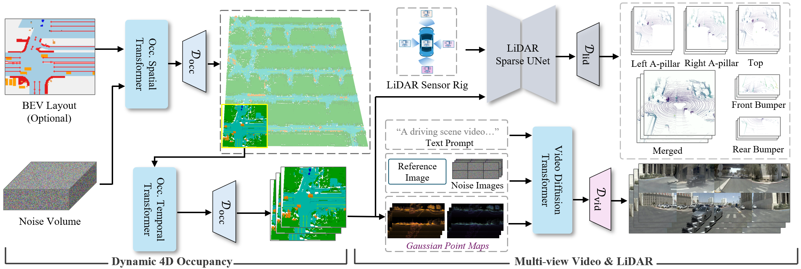
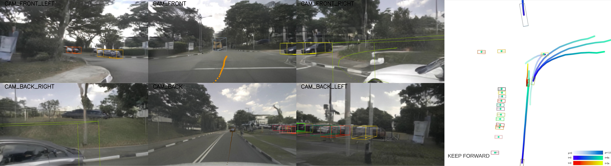
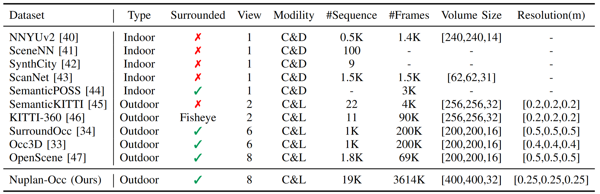
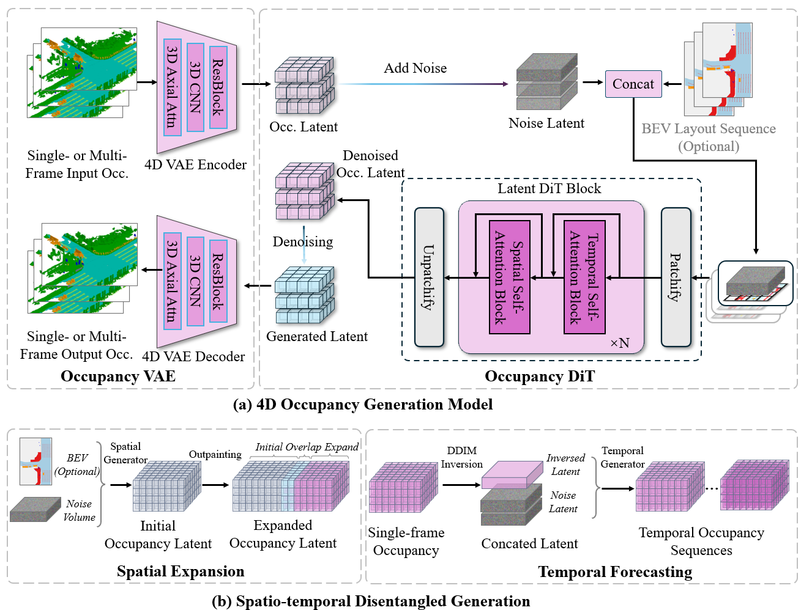
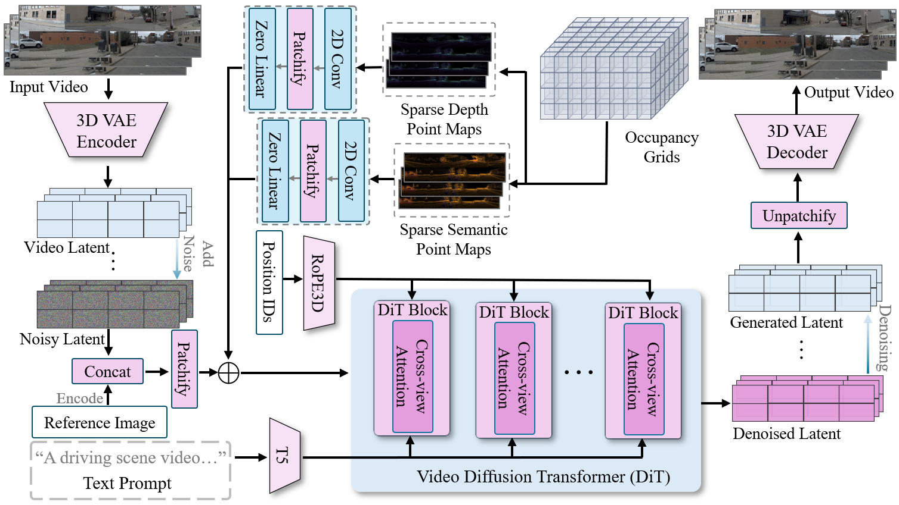
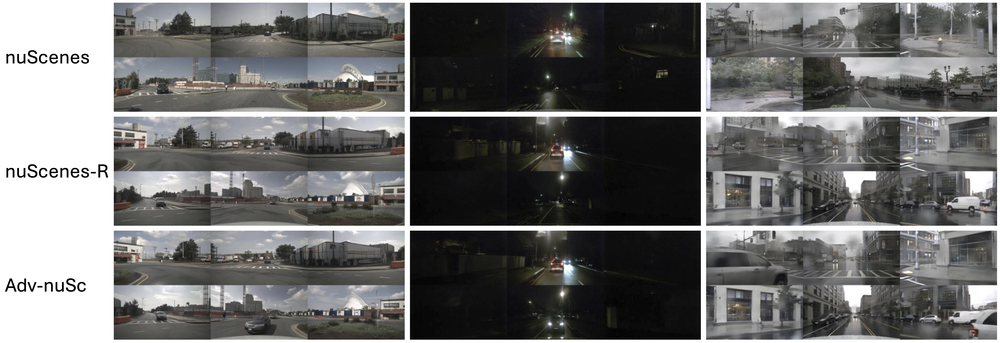

Representations for action
Occupancy, BEV, object states, video, LiDAR, trajectories, and hybrid state abstractions.
CoRL 2026 Half-Day Workshop
A problem-driven workshop on world models that are useful for planning, control, safety validation, and real autonomous systems, not only visually plausible generation.
Motivation
Autonomous driving is a real-world robot learning domain where perception, prediction, decision making, control, safety validation, and human interaction meet. Driving world models now generate multi-view video, semantic occupancy, LiDAR, and interactive scenarios, but the field still lacks shared criteria for when a generated world is useful for action.
This workshop asks participants to define and stress-test grounded world models: models whose representations, dynamics, sensor outputs, and evaluations are tied to real autonomous driving decisions.
Occupancy, BEV, object states, video, LiDAR, trajectories, and hybrid state abstractions.
Geometry, semantics, temporal coherence, sensor rigs, and physically plausible interactions.
Planning utility, no at-fault collisions, drivable area compliance, robustness, and failure transfer.
Technical anchors
The workshop is not limited to these systems, but they provide shared examples for participants: occupancy-centric 4D world modeling and photorealistic adversarial scenario generation.


Core challenges
What should a driving world model predict or generate to support planning and control?
How do generated scenes remain consistent across cameras, LiDAR rigs, maps, and ego motion?
Which metrics should complement FID and FVD when the goal is robust decision making?
How can models generate rare and safety-critical scenarios that are challenging but not impossible?
How should generated data support policy training, audits, monitoring, and sim-to-real validation?
Format
The half-day session centers on collaborative outputs: evaluation checklists, scenario taxonomies, and an open-problems whitepaper.
Define decision-centric world models and the working goals for the day.
Structured world modeling and decision-aware evaluation, each followed by guided questions.
Breakout groups design protocols for synthetic-data training, planning evaluation, and stress testing.
Short spotlights emphasize open problems, negative results, benchmark proposals, and new ideas.
Participants specify challenging but solvable driving interactions and the metrics needed to evaluate them.
Converge on the post-workshop artifact: open problems in decision-centric driving world models.
Starter resources
These resources are intended as optional starting points for workshop contributors. Participants are encouraged to build on them, compare against them, or challenge their assumptions.

Large-scale semantic occupancy data with released checkpoints for occupancy, video, and LiDAR generation.

Use this path for spatial expansion, temporal forecasting, and occupancy-centric scene representations.

Use occupancy-derived conditions for temporally coherent surround-view video and sensor-specific LiDAR outputs.
Generate physically plausible adversarial maneuvers and evaluate vision-based end-to-end driving models under stress.

Connect generated data to semantic occupancy prediction and autonomous driving evaluation pipelines.
Submit methods, datasets, benchmarks, negative results, position papers, or resource reports that tie world models to decisions.
Case study media
Nuplan-Occ supports 4D scene generation, semantic occupancy prediction, and multi-modal simulation.
Sensor outputs should preserve geometry and temporal coherence across views.
LiDAR outputs make generated scenes testable against geometry-aware perception stacks.
Scenario generation can expose rare failure modes in vision-based end-to-end driving systems.
Call for papers
We plan to solicit 2-4 page short papers with optional appendices. Submissions may include new methods, benchmark proposals, dataset reports, position papers, negative results, or early-stage ideas. We welcome work that makes a concrete connection between world modeling and autonomous driving decisions.
Accepted papers will be presented as posters, with selected short spotlights focused on open questions and community value rather than polished final results.
Important dates
People
Names will be updated as invitations and organizer commitments are finalized.
TBD
TBD
TBD
TBD
Organizer 1, Organizer 2, Organizer 3, Organizer 4
Contact email TBD
Post-workshop artifact
The workshop will produce a community whitepaper summarizing evaluation protocols, scenario taxonomies, resource gaps, and research directions proposed by attendees.
Suggested citations
Workshop participants building on the starter resources are encouraged to cite UniScene, UniSceneV2 / Nuplan-Occ, and Challenger as applicable.
@inproceedings{li2025uniscene,
title={UniScene: Unified Occupancy-centric Driving Scene Generation},
author={Li, Bohan and Guo, Jiazhe and Liu, Hongsi and Zou, Yingshuang and Ding, Yikang and Chen, Xiwu and Zhu, Hu and Tan, Feiyang and Zhang, Chi and Wang, Tiancai and others},
booktitle={Proceedings of the Computer Vision and Pattern Recognition Conference},
pages={11971--11981},
year={2025}
}@article{li2026scaling,
title={Scaling Up Occupancy-centric Driving Scene Generation: Dataset and Method},
author={Li, Bohan and Jin, Xin and Zhu, Hu and Liu, Hongsi and Li, Ruikai and Guo, Jiazhe and Cai, Kaiwen and Ma, Chao and Jin, Yueming and Zhao, Hao and others},
journal={IEEE Transactions on Pattern Analysis and Machine Intelligence},
year={2026}
}@article{xu2025challenger,
title={Challenger: Affordable Adversarial Driving Video Generation},
author={Xu, Zhiyuan and Li, Bohan and Gao, Huan-ang and Gao, Mingju and Chen, Yong and Liu, Ming and Yan, Chenxu and Zhao, Hang and Feng, Shuo and Zhao, Hao},
journal={arXiv preprint arXiv:2505.15880},
year={2025}
}